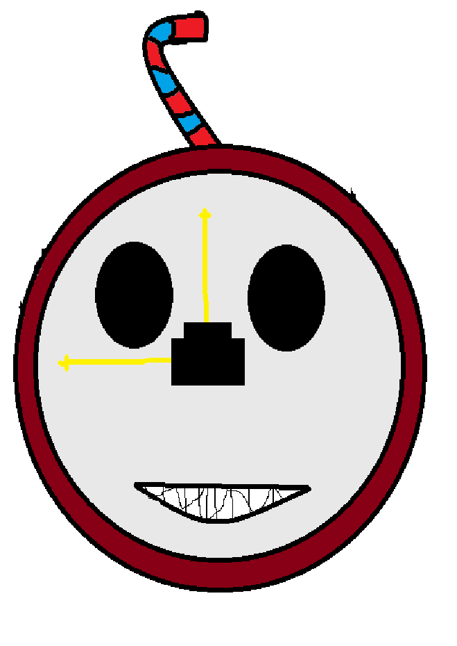

Guribew É um navegador criado e distribuido pela Guris INC.
este navegador foi feito com carinho e seus 999 indianos escravizados. Este navegador conta com um sistema e codigo 100%sem historico,seguro e privado. o criador Arabe Bazzoun.
A empresa responsavel pelo Guribew afirma que este navegador é o melhor para seu consumo

Nos não nos responsabilizamos por qualquer coisa que aconteça com a suas bolas.